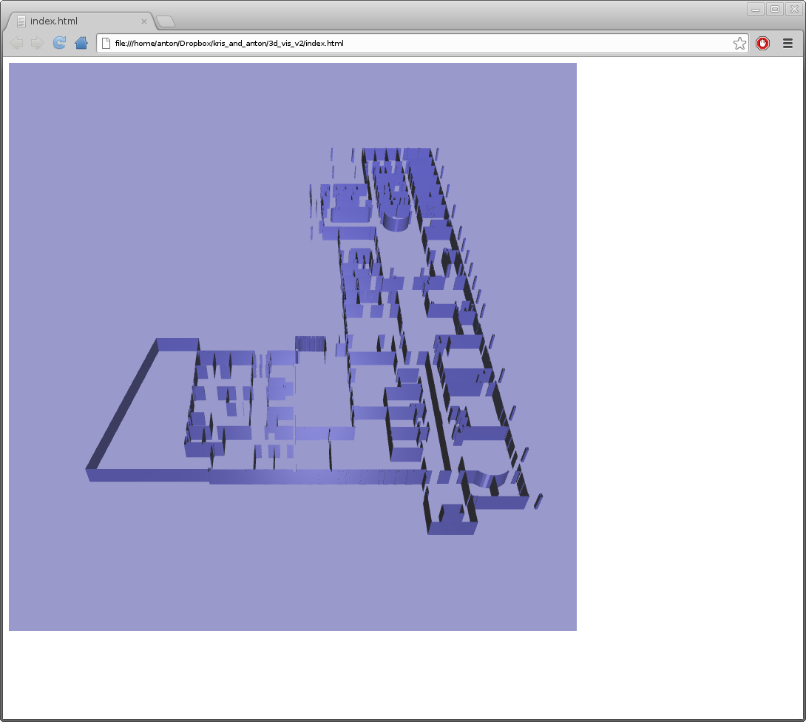
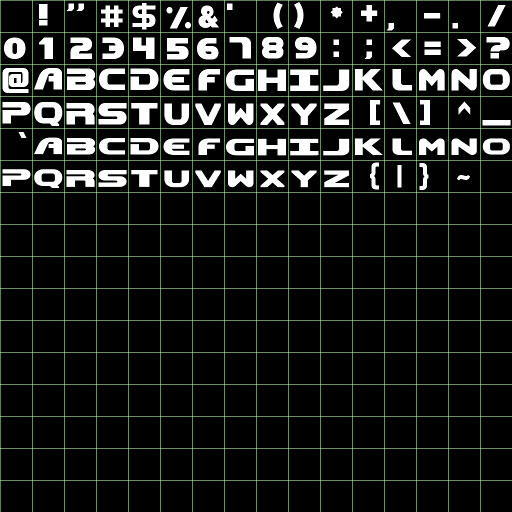
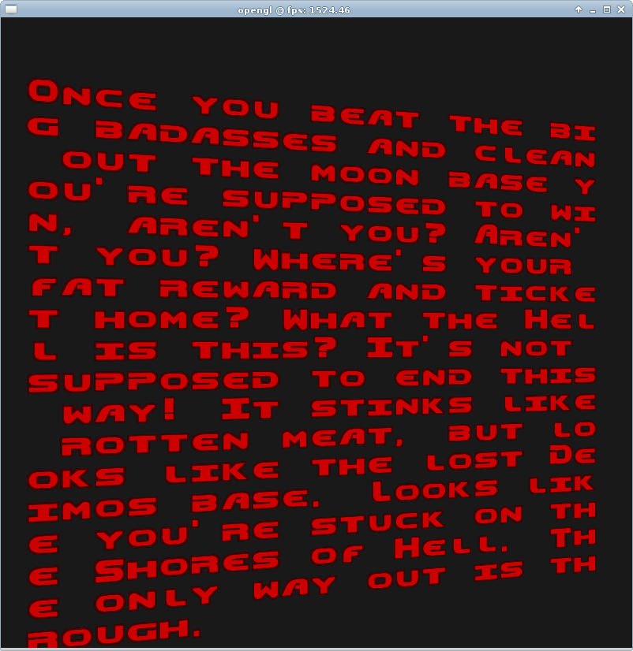

I've been using Google Plus instead of this webpage to write updates...but it's about time I wrote a summary here I guess.
So, switched projects back to smart buildings since last month. Still trying to concentrate on visualisation. It looks like we can grab CAD originals of the buildings, and export these to an XML format, which my colleague wrote a parser for to get only the most relevant bits for visualisation. This is a lot easier than trying to construct a model by parsing the Industry Foundation Classes, which have a hierarchy of coordinate systems embedded in them, and are generally not that nice to parse. It turns out that the IFC files themselves are generated from the original CAD layout, so not much point using that for generating a 3d model if it's more difficult than XML. The project uses IFC files for other aspects of building management - we might need to write into them later, however.
I grabbed the XML building parser and wrote a batching system to collect it in one vertex buffer - this makes much better use of GPU parallelism than lots of small meshes rendered in series. I also generated normals for all the walls, double-sided the walls to make sure that there was a correct normal for each surface, and wrote a Phong lighting shader. I got it running loads faster.
I also wrote 3 side-by-side demos to work out if batching or instancing were faster, and how they compare to a normal brute-force rendering method. It turns out hardware instancing does much the same job as batching behind the scenes (rendering rates were almost identical, regarless of how many objects were drawn) and both are much faster than serial rendering of numerous small objects. WebGL doesn't support instancing yet (I don't think so, anyway), so I'm happy that the batching idea is a good one for now.
I re-wrote a font rendering add-on to OpenGL. It's actually a huge pain to get text to render these days, but it can be rather useful. We don't need it so much in WebGL because we can use the HTML parts of the page, but in Kris' original visualisation he was using 3d text to mark out grid elements so I thought it was worth doing. I should be able to dump this in too, so I'll try adding some annotated bits to the visualisation. The trick with bitmapped fonts was to use a monospaced font, so that you don't need to do any kerning or per-glyph spacing. In this case I used the rather classic monospaced Doom font (and text from the game).
 I was reading a WebGL tutorial on the web and thought the row/column order was frack to bunt...then I questioned myself so I wrote a whole maths vector/matrix library from scratch to make sure I had all the concepts sorted out. Turned out I was okay, but comparing results to a popular GL maths helper library I get slightly different results. I'm not sure why - either it's a precision difference, or some maths theory is wrong somewhere...anyway it seems to work and I think my library is running quite a bit faster than the most popular one so I might use it (albeit with a bit of caution). I also updated my maths cheat sheet (from the previous post). I think my explanation of the view matrix could be better though - the position column can't just be plugged-in, it has to be translated in.
I got a Wacom Tablet at work and have been practicing diagram creation with it. I think it might also be nice for doing vector art (formal diagrams), 3d illustrations, and perhaps 3d models.

I'm writing an instruction manual for WebGL, as well as a whole new set of OpenGL 4 tutorials. I don't want to release them until they're more or less 'done' (or at least significantly better than my existing ones).
So, it looks like the next step is going to be to integrate some meta-data about the building with jQuery tools. I might look at doing some 3d interaction with sensors and things. I already have the ray and colour picking algorithms so it shouldn't be too tricky. The hard bit will be coming up with that best design that reflects the project requirements.
I might try some re-colouring to match the colour of the building. Perhaps add some visual queues like glass, tables and chairs, decorations to speed up the recognition of areas. I'm not sure about shadowing - it would add to depth perception, it would be nice for me to say that I've done it in WebGL, but it's also a huge pain to implement and may not add that much value.